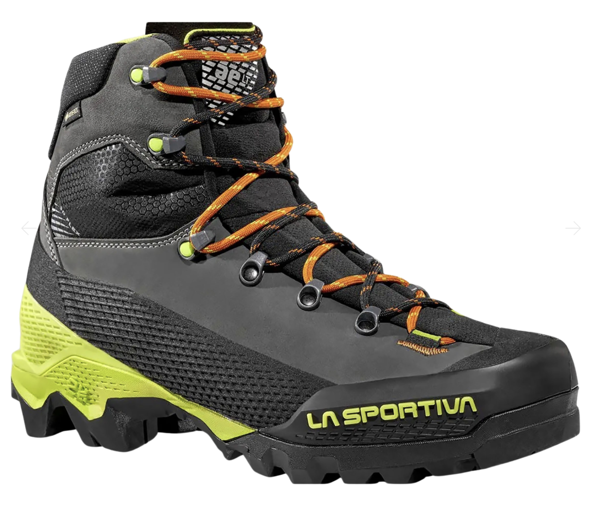
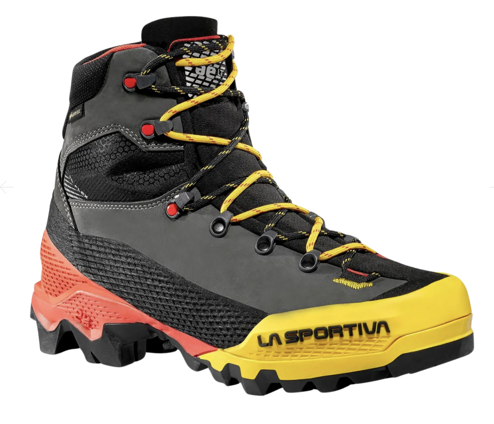
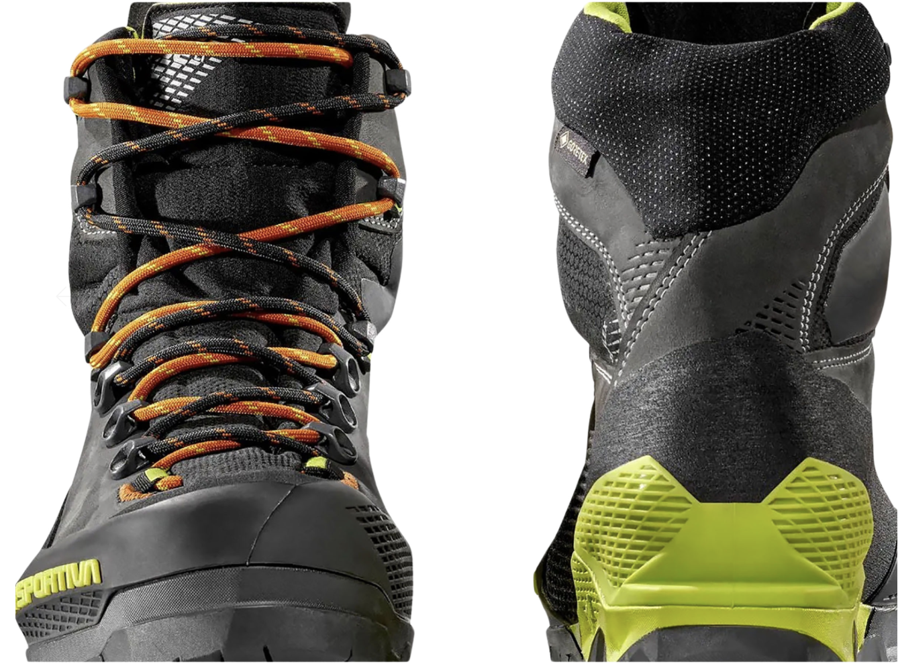
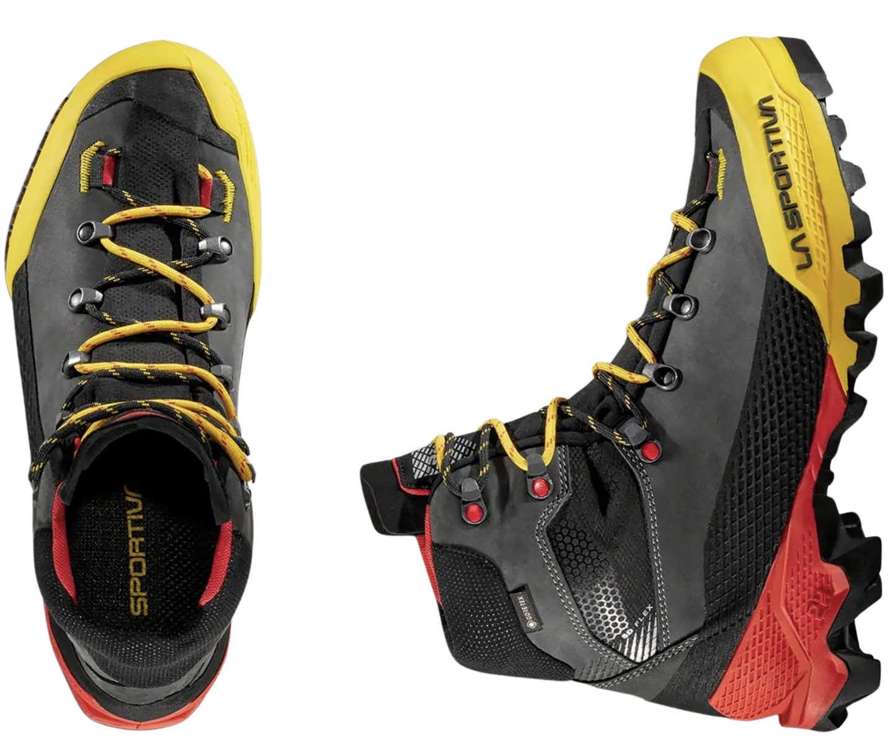
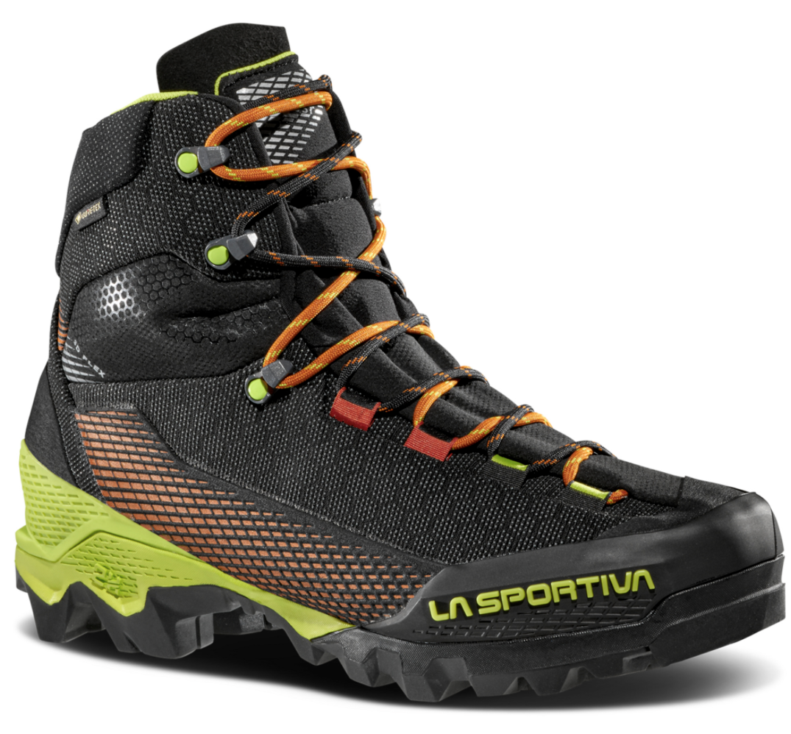
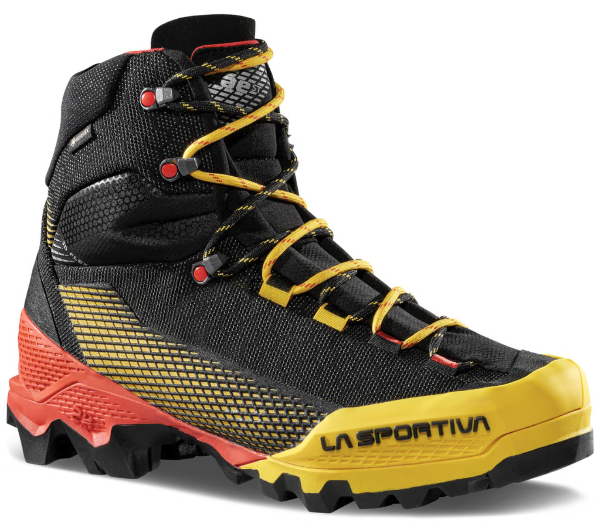
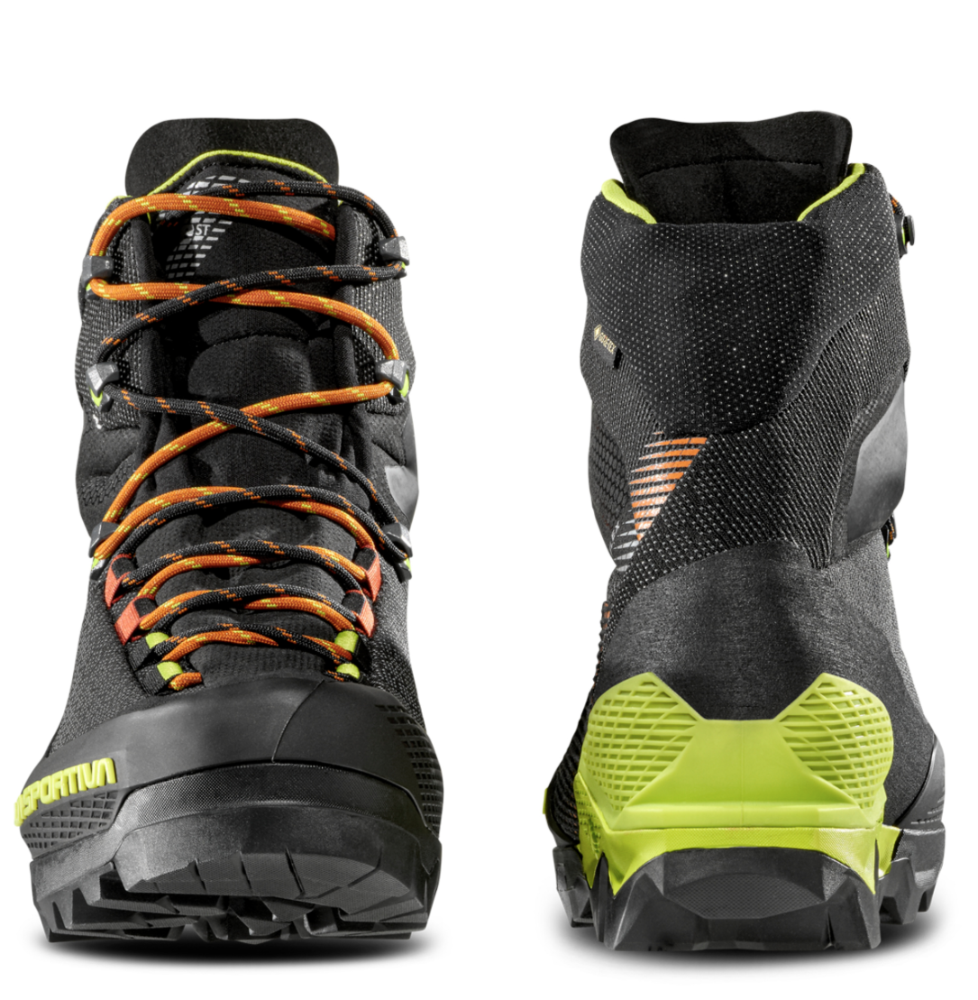
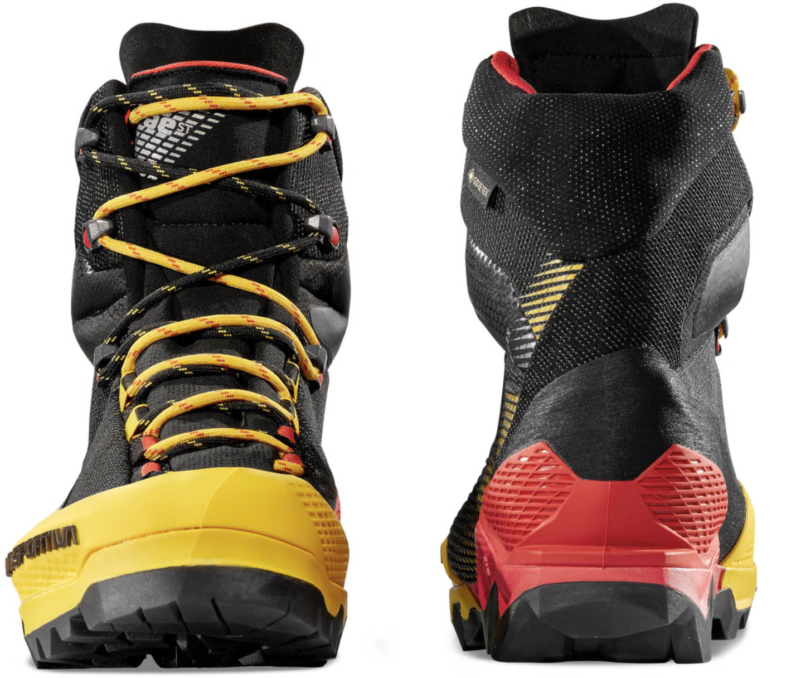
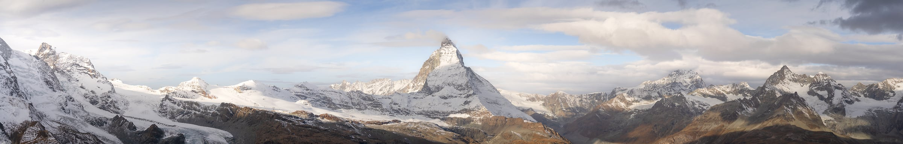

Now that we talked about what makes those shoes so good lets see how they really look.




The Aequilibrium LT GTX is designed for fast-paced hikes and less technical terrain, offering a lightweight and agile option for outdoor enthusiasts. The L in LT stands for leather, which means that the upper part of the shoe is made of leather, providing durability and support.




The Aequilibrium ST GTX is designed for technical approaches and mixed terrain, offering a balance of support and flexibility. The S in ST stands for synthetic, which means that the upper part of the shoe is made of synthetic materials, providing a lightweight and breathable option for outdoor enthusiasts.

| Feature | Aequilibrium LT GTX | Aequilibrium ST GTX |
|---|---|---|
| Weight | 630 g | 640 g |
| Upper material | Leather | Synthetic |
| Waterproof | Gore-Tex | Gore-Tex |
| Recommended use | long hikes / approaches | Little more technical approaches |
| Price | 327.50CHF | 327.50CHF |
| Crampon compatibility | B2 compatible | B2 compatible |
| Weblink to buy |
Now that you read all of that Information, test your knowledge with this quick quiz!